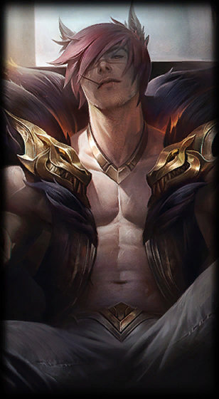

Sett
the Boss
Class :
Fighter, Tank
Lore :
A leader of Ionia's growing criminal underworld, Sett rose to prominence in the wake of the war with Noxus. Though he began as a humble challenger in the fighting pits of Navori, he quickly gained notoriety for his savage strength, and his ability to take seemingly endless amounts of punishment. Now, having climbed through the ranks of local combatants, Sett has muscled to the top, reigning over the pits he once fought in.
Stats :
| Health | Health per level | Mana | Mana per level | Movement speed | Armor | Armor per level | MR | MR per level | Range | HP regen | HP regen per level | Mana regen | Mana regen per level | Crit | Crit per level | AD | AD per level | AS per level | AS |
|---|---|---|---|---|---|---|---|---|---|---|---|---|---|---|---|---|---|---|---|
| 600 | 93 | 0 | 0 | 340 | 33 | 4 | 32 | 1.25 | 125 | 7 | 0.5 | 0 | 0 | 0 | 0 | 60 | 4 | 1.75 | 0.625 |

Passive : Pit Grit
Sett's basic attacks alternate between left and right punch. Right punch is slightly stronger and faster. Sett also hates losing, gaining additional health regeneration based off of his missing health.